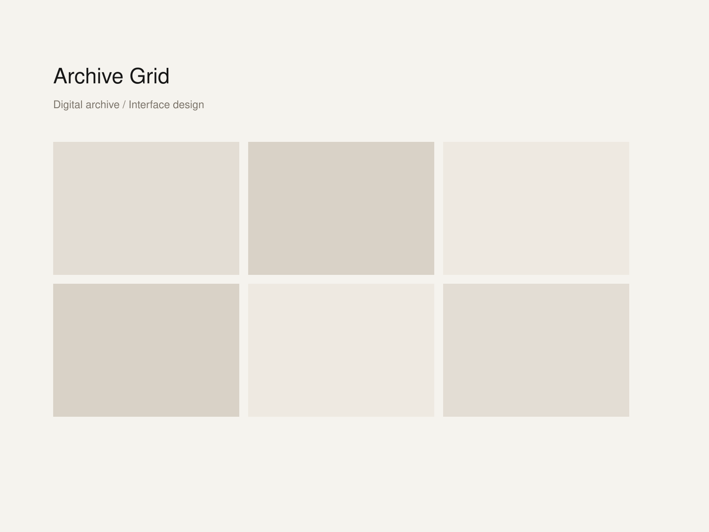

Archive Grid
An archive interface that treats structure as part of the visual experience, not just background organization.

Context
Archive Grid was designed for a collection that kept growing across formats, years, and contributors. The interface needed to feel systematic but never rigid.
The main question was how to preserve the pleasure of browsing while still giving the archive a clear frame.
Design Move
The system relies on consistent rhythm, a restrained palette, and generous negative space. Visual order becomes the interface language.
In Plainframe, that translates well into a project page with a strong header, one central hero image, and short sections that explain the logic without over-talking it.